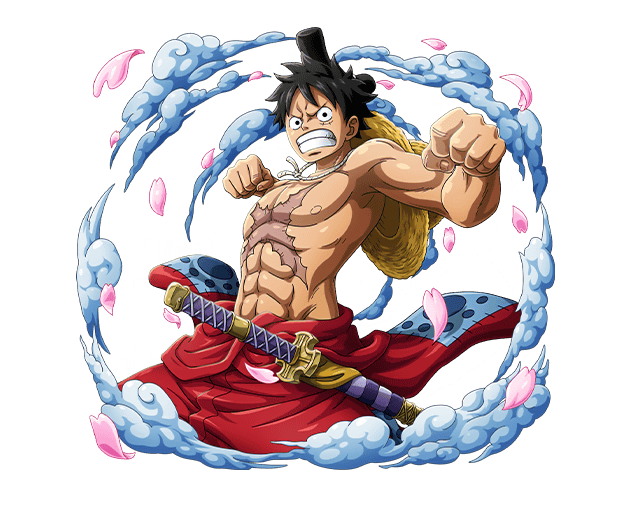

-
Luffy
฿3.000.000.000
Descrição
Luffy, também conhecido como Luffy Chapéu de Palha ou Chapéu de Palha,é um pirata e o protagonista do anime e mangá One Piece. Ele é o fundador e o capitão do cada vez mais infame e poderoso Piratas do Chapéu de Palha, bem como um de seus principais lutadores.
-
Zoro
฿320.000.000

Descrição
Zoro é um jovem musculoso de estatura média com pele levemente bronzeada. Ele sempre carrega suas três espadas junto com ele, enrolado com um haramaki verde sobre o quadril direito, permitindo que ele as saque facilmente com a mão esquerda.
-
Sanji
฿330.000.000

Descrição
Sanji é um jovem magro, porém musculoso, de pernas compridas, com cabelo loiro e mantém seu cabelo escovado sobre apenas um lado do seu rosto. Entre os traços físicos de Sanji estão as sobrancelhas diferenciadas e estranhas. Ambas formam uma espiral, mas em diferentes fins.
-
Usopp
฿200.000.000

Descrição
Usopp é o filho de Yasopp e Banchina. Ele nasceu e foi criado na Vila Syrup, e era o "capitão" dos Piratas Usopp e o amigo mais próximo de Kaya. Após colaborar com os Chapéus de Palha para derrotar Kuro e os Piratas do Gato preto, ele foi convidado a se juntar à tripulação.
-
Nami
฿66.000.000

Descrição
A "Gata Ladra" Nami é a navegadora dos Piratas do Chapéu de Palha. Ela foi o terceiro membro da tripulação e a segunda a entrar, fazendo-o durante o Arco Orange Town. Ela é a irmã adotiva de Nojiko, desde que as duas ficaram órfãs e foram levadas por Bell-mère.
-
Robin
฿130.000.000

Descrição
Nico Robin, também conhecida como "Criança Demônio" e "Luz da Revolução", é a arqueóloga dos Piratas do Chapéu de Palha. Ela é a única sobrevivente da ilha destruída de Ohara, localizada no West Blue. Como resultado, ela é atualmente a única pessoa no mundo com a capacidade de ler e decifrar Poneglyphs, uma habilidade que é considerada proibida e que ameaça o Governo Mundial.
-
Chopper
฿100

Descrição
Tony Tony Chopper é uma rena. Ele é o médico da tripulação dos Piratas do Chapéu de Palha. Chopper é uma rena que, após comer a Hito Hito no Mi, adquiriu a habilidade de se transformar e raciocinar como os humanos.Ele é o sexto membro e um dos poucos membros da tripulação que nasceu na Grand Line, numa ilha chamada Drum. Por ter sido confundido como mascote, a recompensa atual de sua captura é de apenas 100.
-
Brook
฿83.000.000

Descrição
Brook é o Músico dos Piratas do Chapéu de Palha. Ele é um esqueleto que os Chapéus de Palha encontraram a bordo de um navio fantasma depois de entrarem no Triângulo Florian. Ele é um usuário de Akuma no Mi que comeu a Yomi Yomi no Mi, o que o torna um pseudo-imortal por causa de seus poderes. Ele é o nono membro do Bando do Chapéu de Palha, e o oitavo a se juntar à tripulação de Luffy. Ele é também um dos dois Espadachins a bordo de seu atual navio, o outro sendo Zoro. Ele preenche o cargo do tão esperado músico que Luffy queria para sua tripulação desde que sua jornada começou
-
Franky
฿94.000.000

Descrição
Franky é o carpinteiro dos Piratas do Chapéu de Palha. Ele é um cyborg de 36 anos de Water 7 e foi introduzido na história como o líder da Família Franky, um grupo de desmantelamento de navios. Ele foi originalmente chamado de "Cutty Flam" até trocar seu nome original por seu apelido a pedidos de Iceburg para esconder sua identidade. Franky e seus seguidores foram inicialmente introduzidos como antagonistas do Arco Water 7 contra os Chapéus de Palha até as circunstâncias forçá-los a se tornarem aliados. A pedido da Família Franky, Franky foi permitido se juntar aos Chapéu de Palha para realizar seu sonho de criar e dirigir um navio capaz de dar a volta ao mundo, o Thousand Sunny. Ele é o oitavo membro da tripulação dos Chapéus de Palha e o sétimo a se juntar ao bando de Luffy.